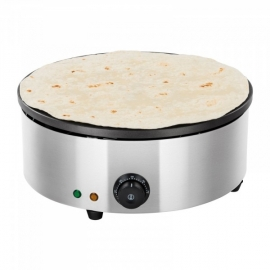

Welcome to keptuvės
Keptuvės | imperija.lt
2020.10.29 08:40Mūsų svetainėje naudojami slapukai, kad užtikrintume jums teikiamų paslaugų kokybę. Išjungdami šį pranešimą arba toliau naršydami šioje svetainėje sutinkate su imperija.lt slapukų naudojimo politika . Supratau
Orkaitės
Kaitlentės
Gartraukiai
Šaldytuvai, šaldikliai
Mikrobangų krosnelės, dekoratyvinės durelės mikrobangėms
Įmontuojami kavos aparatai, aksesuarai
Indaplovės
Skalbyklės
Viryklės
Indų pašildymo stalčiai
Plautuvės, vandens maišytuvai
Virtuviniai kombainai
Mikseriai / blenderiai
Elektriniai virduliai
Skrudintuvai
Kavos virimo aparatai, kavamalės
Elektriniai keptuvai / griliai
Elektrinės sulčiaspaudės
Elektriniai daugiafunkciniai puodai
Kiti prietaisai
Puodai, troškintuvai
Keptuvės
Dangčiai
Kepimo indai, formos, skardos ir aksesuarai konditerijai
Virduliai
Vakuuminiai indai
Indai biriems maisto produktams
Termosai
Stalo įrankiai
Vaikiškų stalo indų, įrankių rinkiniai
Lėkštės, indų servizai, dubenys, salotinės, padažinės
Puodeliai, stiklinės, taurės, gertuvės
Indeliai užkandžiams
Ąsočiai, ąsotėliai, grafinai
Tortinės, vaisinės, padėklai
Sviestinės
Arbatinukai, kavinukai
Servizai kavai, arbatai
Druskinės, pipirinės, cukrinės
Fondiu indai
Indai gėrimų atšaldymui
Vazos, žvakidės
Virtuvės įrankiai
Peiliai, peilių laikikliai, galąstuvai
Pjaustymo lentelės, duoninės, popierinių rankšluosčių laikikliai
Tarkos, pjaustyklės, smulkintuvai ir virtuvinės žirklės
Makaronų mašinėlės ir jų priedai, įrankiai miltinių gaminių ruošimui
Rankinės mėsmalės ir jų priedai
Skustukai, gremžtukai, kauliukų išėmėjai
Malūnėliai, grūstuvės, prieskonių ir aliejaus indai
Sulčiaspaudės, spaustuvai, trintuvės
Koštuvai, sieteliai
Konservų ir butelių atidarytuvai
Termometrai, laikmačiai, svarstyklės
Griliaus įrankiai
Įvairūs virtuviniai aksesuarai
Valymo priemonės, valikliai
Valymo įrankiai, šluostės
Muilinės
Kvepalai namams
Kvepiančios žvakės
Buitinė technika
Orkaitės
Kaitlentės
Gartraukiai
Šaldytuvai, šaldikliai
Mikrobangų krosnelės, dekoratyvinės durelės mikrobangėms
Įmontuojami kavos aparatai, aksesuarai
Indaplovės
Skalbyklės
Viryklės
Indų pašildymo stalčiai
Plautuvės, vandens maišytuvai
Smulki buitinė technika
Virtuviniai kombainai
Mikseriai / blenderiai
Elektriniai virduliai
Skrudintuvai
Kavos virimo aparatai, kavamalės
Elektriniai keptuvai / griliai
Elektrinės sulčiaspaudės
Elektriniai daugiafunkciniai puodai
Kiti prietaisai
Virtuvės indai
Puodai, troškintuvai
Keptuvės
Dangčiai
Kepimo indai, formos, skardos ir aksesuarai konditerijai
Virduliai
Vakuuminiai indai
Indai biriems maisto produktams
Termosai
Stalo indai, stalo įrankiai
Stalo įrankiai
Vaikiškų stalo indų, įrankių rinkiniai
Lėkštės, indų servizai, dubenys, salotinės, padažinės
Puodeliai, stiklinės, taurės, gertuvės
Indeliai užkandžiams
Ąsočiai, ąsotėliai, grafinai
Tortinės, vaisinės, padėklai
Sviestinės
Arbatinukai, kavinukai
Servizai kavai, arbatai
Druskinės, pipirinės, cukrinės
Fondiu indai
Indai gėrimų atšaldymui
Vazos, žvakidės
Virtuvės įrankiai ir aksesuarai
Virtuvės įrankiai
Peiliai, peilių laikikliai, galąstuvai
Pjaustymo lentelės, duoninės, popierinių rankšluosčių laikikliai
Tarkos, pjaustyklės, smulkintuvai ir virtuvinės žirklės
Makaronų mašinėlės ir jų priedai, įrankiai miltinių gaminių ruošimui
Rankinės mėsmalės ir jų priedai
Skustukai, gremžtukai, kauliukų išėmėjai
Malūnėliai, grūstuvės, prieskonių ir aliejaus indai
Sulčiaspaudės, spaustuvai, trintuvės
Koštuvai, sieteliai
Konservų ir butelių atidarytuvai
Termometrai, laikmačiai, svarstyklės
Griliaus įrankiai
Įvairūs virtuviniai aksesuarai
Švaros prekės
Valymo priemonės, valikliai
Valymo įrankiai, šluostės
Muilinės
Kvepalai namams
Kvepiančios žvakės
Gamintojai
Mūsų parduotuvės Kaip pirkti? Prisijungti arba registruotis Krepšelis 0 Turite klausimų? +370 700 88770 Pradžia Virtuvės indaiKeptuvės
iki -35% WOLL gimtadienis! Tokios nuolaidos – tik kartą metuose!
Akcija galioja iki 2020 11 03
Filtrai Populiariausios viršuje Pigiausios viršuje Naujausios viršuje 24 48 96 Tipas
Nesvylantis kepimo paviršius 154 Keptuvių rinkiniai - pigiau 11 Nerūdijančio plieno 10 Ketaus 6 Geležinės 3Savybės
Galima naudoti orkaitėje 154 Nuimama rankena 91 Fiksuota rankena 72 Kvadratinė forma 33Tinka viryklėms
Indukcinėms ir kitų tipų viryklėms 100 Visų tipų viryklėms, išskyrus indukcines 63Kaina
Spec. pasiūlymai
Akcija 161 Naujiena 10Gamintojas
WOLL 148 KELA 3 Creative Tops 2 Steuber 3 GUSTA 5 LACOR 2 SCHULTE-UFER 1 ROHE 2 Migiris 4Skersmuo
20 x 20 cm 2 24 x 24 cm 4 26 x 26 cm 8 28 x 28 cm 19 38 x 28 cm 1 Ø 20 cm 23 Ø 24 cm 41 Ø 26 cm 23 Ø 28 cm 43 Ø 30 cm 5 Ø 32 cm 12 Ø 38 cm 1 Ø 40 cm 1Keptuvės aukštis
Standartinės (4-6 cm) 87 Gilios (6,5 cm ir daugiau) 73 Seklios (1-3 cm) 11Paskirtis
Įprastam kepimui 83 Kepimui - troškinimui 46 WOK 15 Griliavimui 14 Lietiniams 10 Paella 4 Čirviniams blynams, grybukams 2 Žuviai 1Pristatymas
1-2 d.d. 146 3-5 d.d. 13 1-4 sav. 11 Populiariausia prekė-20%
nuimama rankena WOLL gili liejinio keptuvė „nowo Titanium , Ø 28 cm € 71,16 € 88,95 € 71,16 € 88,95 Į krepšelį Populiariausia prekė
-30%
nuimama rankena indukcija WOLL pusiau gili liejinio keptuvė „Nowo Titanium Induction , Ø 28 cm € 79,80 € 114,00 € 79,80 € 114,00 Į krepšelį Populiariausia prekė
-35%
nuimama rankena indukcija WOLL liejinio keptuvių rinkinys Diamond Lite Induction , 24 + 28 cm € 135,85 € 209,00 € 135,85 € 209,00 Į krepšelį -35%
nuimama rankena indukcija WOLL ovali liejinio keptuvė žuviai „Nowo Titanium Induction , 38 x 28 cm € 93,60 € 144,00 € 93,60 € 144,00 Į krepšelį -35%
indukcija WOLL liejinio keptuvė „Diamond Lite Pro Induction , WOK, Ø 26 cm € 72,80 € 112,00 € 72,80 € 112,00 Į krepšelį -35%
indukcija WOLL keturkampė liejinio keptuvė „Diamond Lite Pro Induction , 26 x 26 cm € 83,85 € 129,00 € 83,85 € 129,00 Į krepšelį -35%
nuimama rankena indukcija WOLL liejinio keptuvių rinkinys Diamond Lite Induction , 20 + 28 cm € 127,40 € 196,00 € 127,40 € 196,00 Į krepšelį -35%
indukcija WOLL keturkampė liejinio keptuvė „Diamond Lite Pro Induction , 28 x 28 cm € 86,45 € 133,00 € 86,45 € 133,00 Į krepšelį -35%
WOLL liejinio keptuvė „Nowo Titanium , WOK, Ø 32 cm € 73,45 € 113,00 € 73,45 € 113,00 Į krepšelį -35%
nuimama rankena indukcija WOLL liejinio keptuvių rinkinys Diamond Titan Best Induction € 293,77 € 451,95 € 293,77 € 451,95 Į krepšelį -35%
nuimama rankena WOLL liejinio keptuvių rinkinys Diamond Titan Best € 233,62 € 359,40 € 233,62 € 359,40 Į krepšelį -35%
nuimama rankena indukcija WOLL liejinio keptuvė Diamond Lite Induction , Ø 20 cm € 56,52 € 86,95 € 56,52 € 86,95 Į krepšelį -35%
WOLL liejinio keptuvė „Diamond Lite Pro , Ø 20 cm € 53,27 € 81,95 € 53,27 € 81,95 Į krepšelį -30%
nuimama rankena indukcija WOLL keturkampė liejinio keptuvė „Nowo Titanium Induction , 24 x 24 cm € 76,30 € 109,00 € 76,30 € 109,00 Į krepšelį -30%
WOLL liejinio keptuvė „nowo Titanium , WOK, Ø 32 cm € 76,30 € 109,00 € 76,30 € 109,00 Į krepšelį -30%
nuimama rankena indukcija WOLL keturkampė liejinio keptuvė „Nowo Titanium Induction , 26 x 26 cm € 83,30 € 119,00 € 83,30 € 119,00 Į krepšelį -30%
nuimama rankena WOLL liejinio keptuvė „Diamond Lite , WOK, Ø 30 cm € 72,80 € 104,00 € 72,80 € 104,00 Į krepšelį -30%
indukcija WOLL gili liejinio keptuvė „Saphir Lite Induction , Ø 32 cm € 72,10 € 103,00 € 72,10 € 103,00 Į krepšelį -30%
indukcija WOLL gili liejinio keptuvė „Diamond Lite Pro Induction , Ø 24 cm € 78,40 € 112,00 € 78,40 € 112,00 Į krepšelį -30%
WOLL gili liejinio keptuvė „Diamond Lite Pro , Ø 28 cm € 72,80 € 104,00 € 72,80 € 104,00 Į krepšelį -30%
nuimama rankena WOLL keturkampė liejinio keptuvė griliavimui Diamond Titan Best , Ø 28 x 28 cm € 76,30 € 109,00 € 76,30 € 109,00 Į krepšelį -30%
nuimama rankena indukcija WOLL keturkampė liejinio keptuvė „Diamond Titan Best Induction , 26 x 26 cm € 90,30 € 129,00 € 90,30 € 129,00 Į krepšelį -30%
nuimama rankena WOLL keturkampė liejinio keptuvė „Diamond Titan Best , 26 x 26 cm € 72,80 € 104,00 € 72,80 € 104,00 Į krepšelį -30%
nuimama rankena WOLL keturkampė liejinio keptuvė „Diamond Titan Best , 28 x 28 cm € 74,90 € 107,00 € 74,90 € 107,00 Į krepšelį Ankstesnis puslapis | 1 | 2 | 3 | 4 | 5 | 6 | 7 | 8 | Sekantis puslapis
Namuose gamintas maistas yra nepalyginamai skanesnis už pirktinius patiekalus. Tiesa, norint, kad maisto gaminimas būtų tikras malonumas, o patiekalai net ir neturint kulinarinių gebėjimų būtų puikūs - reikalingos kokybiškos keptuvės . Keptuvė yra vienas iš dažniausiai naudojamų virtuvės indų maisto ruošime. Vieni žmonės įpratę naudoti dideles keptuves, kiti renkasi mažas. Vieni mėgsta gilesnes, o kiti – seklias. Vieni mėgsta sunkesnes, kiti – lengvesnes.
Keptuvės dydis - vienas svarbiausių kriterijų, kadangi pasirinkę tinkamą keptuvę, galėsite išsikepti optimalų kiekį maisto. Juk jei gyvenate vienas, didelė šeimyninė keptuvė jums nebus labai patogi, o keturių asmenų šeimai nedidelė keptuvė taip pat nėra išeitis. Keptuvės skersmenį būtent ir yra patogiausia rinktis pagal tai, keliems žmonėms dažniausiai gaminsite maistą. Reikia nepamiršti, kad ir vienas asmuo gali turėti draugų ir kitų svečių. Geriausia yra turėti keletą skirtingų diametrų keptuvių – nedidukę, vidutinio diametro ir didesnę. Kiekvienu atveju naudojame skirtingą keptuvę, pavyzdžiui, jeigu norime išsikepti keletą kiaušinių, kam naudoti didelę keptuvę? Juk tam sunaudotumėte didesnius energijos kiekius. Turint daugiau keptuvių ir jomis kepant pakaitomis, prailgėja jų naudojimo laikas.
Savo asortimente siūlome žinomų gamintojų keptuves: Woll, Kela, Migiris ir kitos, o vykdomų akcijų metu aukštos klasės keptuvę galite įsigyti už kur kas mažesnę kainą. Užsiprenumeruokite mūsų naujienlaiškį ir pirmieji sužinokite apie naujausius pasiūlymus.
Tegul gaminimas būna tikras malonumas!
Prekių pristatymas
Pristatymas per 1-2 d. d.
Skaityti daugiau
Prekių grąžinimas
Grąžinimas per 14 dienų
Skaityti daugiau
Saugus pirkimas
100% saugus pirkimas
Skaityti daugiau
Kaip pirkti?
Greita, saugu ir paprasta
Skaityti daugiau
Pas mus galite atsiskaityti
Grynais Bankiniu pavedimuKatalogas
Buitinė technika
Smulki buitinė technika
Virtuvės indai
Stalo indai, stalo įrankiai
Virtuvės įrankiai ir aksesuarai
Švaros prekės
Informacija
Apie mus
Kaip pirkti?
Prekių pristatymas
Prekių grąžinimas
Saugus pirkimas
Privatumo politika
Mūsų parduotuvės
Lojalumo programa
Kontaktai
Sekite mus
Visos naujienos gyvai Imperija.lt © 2020 IMPERIJA